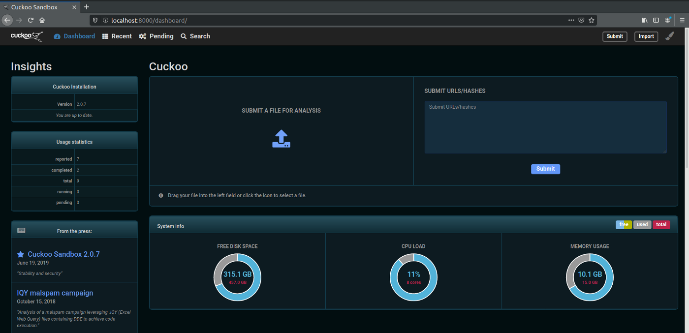
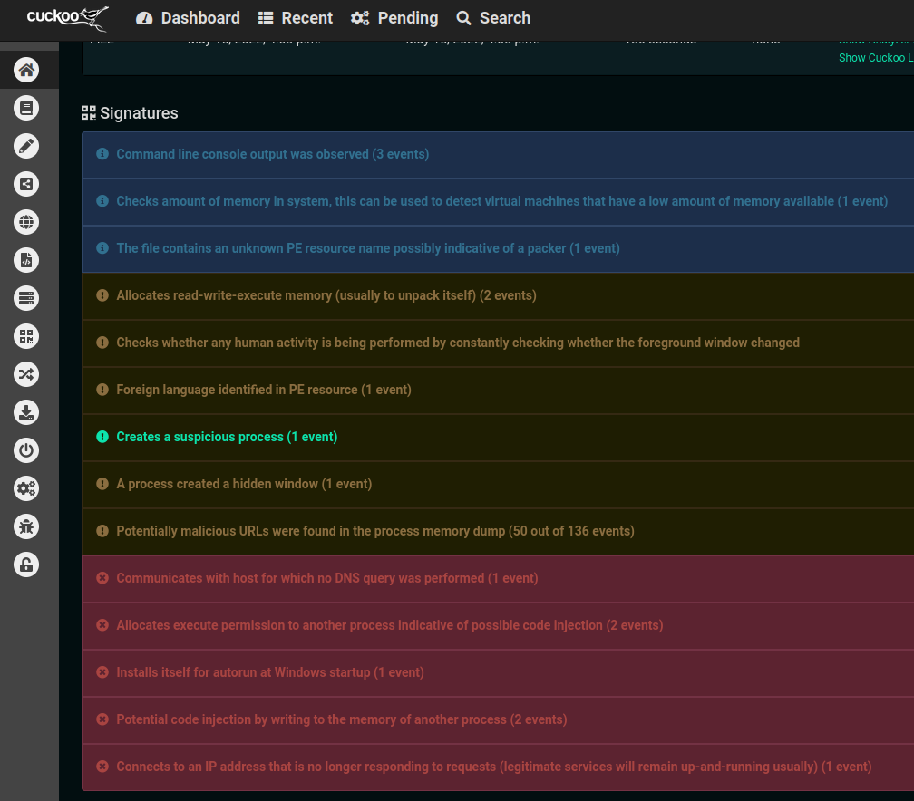
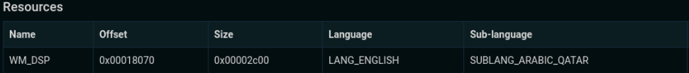
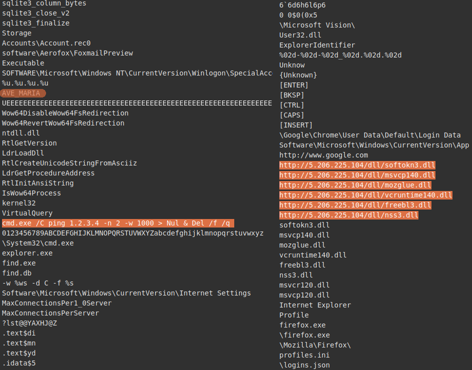

Building a Malware Analysis LabInvestigating Warzone RAT and a Telegram Bot

Summary
This project documents the construction of a malware analysis lab and the investigation of multiple suspicious files using static and dynamic analysis techniques. The primary analysis workflow relied on Cuckoo Sandbox, Cutter, FLOSS, Wireshark, and TCPdump to examine malware behavior in a controlled environment. One analyzed sample was identified as Ave Maria / Warzone RAT, and the investigation produced host and network-based indicators that could support YARA, IDS, and firewall detections.
Project Overview
Malware analysis pulls together many of the technical skills used across defensive security: reverse engineering, scripting, network traffic analysis, digital forensics, and detection engineering. For this project, I built a lab environment designed to safely inspect suspicious files and malicious websites, then used that environment to analyze roughly forty samples in total. This writeup focuses on two representative binaries to keep the page concise while still showing the tools, methodology, and decision-making involved in the analysis.
My goal wasn't just to label files as malicious or benign, but to understand how much useful defensive value could be extracted through practical analysis. That included identifying malware family traits, reviewing anti-analysis techniques, observing network behavior, and pulling indicators that could be used in downstream detection content.
Why This Project Matters
Malware continues to scale faster than purely manual defensive workflows can keep up with. Automated analysis can help triage large volumes of suspicious files, but analysts still need enough technical depth to validate tool output, interpret behavior, and investigate samples that deliberately resist analysis. This project was an opportunity to build that foundation in a hands-on way.
It also served as a practical demonstration of end-to-end investigative work: setting up a safe lab, choosing tooling, analyzing samples, dealing with broken dependencies and environmental issues, interpreting conflicting signals, and translating findings into artifacts that could inform detection engineering.
Lab Environment
A safe malware analysis workflow starts with isolation. I built the lab around virtualization so malware could be executed without risking the primary workstation or contaminating results with unrelated system activity. Because Cuckoo Sandbox runs on Linux and dependency issues were already a concern, I chose to dual-boot into Ubuntu rather than add another virtualization layer on top of the host.
Core Tooling
- Cuckoo Sandbox for automated static and dynamic analysis
- Cutter / Radare2 for decompilation and string review
- FLOSS for extracting additional or obfuscated strings
- Wireshark and TCPdump for network traffic analysis
- Suricata for IDS visibility and correlation
- Windows virtual machines for detonation and behavioral observation
Design Decisions
One of the first tradeoffs was whether the detonation VM should have network access. Blocking all outbound access is safer, but it also limits the ability to observe command-and-control traffic, payload retrieval, and other behaviors that only appear during full execution. I chose to allow network access and reduced risk by shutting down other devices on the network during testing.
Dependency management became one of the more interesting parts of the build. Cuckoo’s reliance on Python 2 created installation friction, which ultimately led me to downgrade to Ubuntu 18.04 before I was able to get a stable setup working. I installed Cuckoo inside a Python virtual environment to isolate dependencies. When my attempt to incorporate Volatility memory analysis broke the existing installation, I rebuilt Cuckoo in a second virtual environment and reused the same configuration files to restore functionality.

Analysis Workflow
I used a repeatable workflow that combined automated triage with targeted manual review. Automated tooling was useful for scale and for quickly surfacing behaviors, but manual inspection was still necessary to validate the output, compare tools, and identify details that the sandbox summary did not highlight.
- Collect suspicious samples and stage them in the analysis environment
- Review strings and decompiled output in Cutter
- Extract additional strings with FLOSS
- Execute samples via Cuckoo Sandbox in a Windows VM for dynamic analysis
- Inspect network activity with Wireshark and TCPdump
- Extract indicators and assess detection opportunities
Representative Samples
Although the broader project included many suspicious files and malicious websites, two binaries stood out during review and are the focus of this writeup. One appeared suspicious but did not clearly demonstrate malicious behavior in the lab. The other could be positively identified as a known remote access trojan.
| Sample | Filename | Initial Assessment |
|---|---|---|
| Sample 1 | CreditCard.bin | Heavily obfuscated .NET binary with suspicious characteristics |
| Sample 2 | vbstudio.bin | Identified as Ave Maria / Warzone RAT |
Static Analysis Findings
CreditCard.bin
The first sample appeared to be a Telegram bot or related utility, but it was protected with multiple layers of obfuscation. Cuckoo reported high-entropy sections, and the binary appeared to use SmartAssembly, UPX, and Enigma Protector. That level of protection seemed excessive for the functionality suggested by the embedded strings and raised questions about the file’s true purpose.

Static review showed that the sample loaded several DLLs, including telegram.dll. While that supported the idea that the file was tied to Telegram functionality, it did not resolve whether the sample was overtly malicious or simply unwanted software. Cuckoo also surfaced signing and branding details that suggested a developer-operated bot service. Even so, a heavily obfuscated Telegram-related binary would have little legitimate reason to exist on a corporate workstation and would still warrant removal in an enterprise environment.
vbstudio.bin
The second sample produced stronger indicators. Cuckoo reported high-entropy sections and a locale reference to SUBLANG_ARABIC_QATAR. Locale artifacts can sometimes hint at origin, but they can also be intentionally misleading false flags. I treated that observation cautiously but 5.206.225.104 was observed as the host of imported libraries and is registered to the RIPE NCC (Réseaux IP Européens Network Coordination Centre), which serves Europe, the Middle East, and parts of Central Asia, lending some credibility to the locale finding. More useful than the local were the strings and imported libraries associated with the executable.

The sample referenced DLLs commonly associated with credential theft and related malware functionality, including softokn3.dll, msvcp140.dll, mozglue.dll, vcruntime140.dll, freebl3.dll, and nss3.dll. The clearest clue, however, was an embedded command string:
cmd.exe /C ping 1.2.3.4 -n 2 -w 1000 > Nul & Del /f /qCorrelating that string and others with known malware behavior led to identification of the sample as Ave Maria / Warzone RAT. At that point, the focus shifted from basic classification to extracting actionable indicators and understanding what the sandbox could and could not observe during execution.

Anti-Analysis and Evasion Notes
One of the more important lessons from the project was how quickly malware analysis becomes a contest between analyst visibility and malware author countermeasures. Malware authors routinely obscure code to frustrate static analysis, delay execution, or modify behavior when they detect debuggers, virtual machines, or automated sandboxes.
The obfuscated sample protections included packers and .NET obfuscation. The Warzone sample performed checks consistent with sandbox or VM awareness, including inspection of system RAM and foreground window activity. Those checks matter because they can suppress malicious behavior, delay payload retrieval, or cause a sample to appear less interesting than it really is. Notably, static analysis revealed 5.206.225.104 as the host to retrieve info-stealer related DLLs from, but the sample didn't send any requests to that host during analysis which may have been influenced by the sample's sandbox evasion tactics.
The project also reinforced the value of entropy as a quick triage signal. High entropy is not proof of maliciousness, but it often supports a hypothesis that a sample has been packed, encrypted, or otherwise transformed to reduce analyst visibility.
Dynamic Analysis Findings
CreditCard.bin Behavior
Despite its obfuscation, CreditCard.bin did not behave like the clearly malicious samples in the set. It did not appear to perform environment checks for virtualization or sandboxing, and it produced no network traffic during the observed execution window. Cuckoo did report that the process allocated read-write-execute memory, which is consistent with unpacking behavior, and that it enumerated portions of the Windows registry before continuing.
Taken together, the sample remained suspicious but not definitively malicious based on the evidence I gathered. My conclusion was that it was likely an unnecessary or unwanted executable rather than a confirmed malware family. Additional work such as unpacking or deeper debugging would be needed for a stronger attribution.
Warzone RAT Behavior
The Warzone sample produced much clearer dynamic results. Cuckoo reported environment checks for available system RAM and for ongoing foreground window changes, both of which are consistent with attempts to detect virtualized or automated analysis environments. If the system looks too artificial, malware may reduce or delay its behavior.
During execution, the sample communicated with infrastructure hosted by 104.192.3.254. The host did not respond during the observed session. Wireshark showed that the initial traffic reached out to the address, but no reply was returned. There are several plausible explanations for that result: the infrastructure may have been offline, the malware may have partially recognized the environment, or the detonation window may not have been long enough to capture a full response cycle.
The sample also opened a hidden command-line window, installed itself for autorun at startup, and performed two potential code injections according to the sandbox output. Those behaviors aligned much more clearly with a malicious remote access trojan than with an unwanted-but-legitimate utility.
Detection Opportunities
One of the most valuable outputs from malware analysis is detection content. Even when a sample does not fully execute, static and dynamic artifacts can still be turned into useful host- and network-based detections. In this case, the investigation produced indicators that could support YARA rules, IDS signatures, firewall blocklists, or threat hunting queries.
Network and Infrastructure Indicators
- 104.192.3.254 observed during dynamic analysis
- Additional strings-derived infrastructure that supported the malware identification workflow
Behavioral Indicators
- System RAM inspection to detect virtualized environments
- Foreground activity checks to identify automated sandboxes
- Hidden command shell activity
- Persistence via autorun configuration
- Potential code injection behavior
YARA Rule
Based on strings and infrastructure extracted during analysis, I wrote a YARA rule to detect the analyzed Warzone RAT sample. I refined the rule to avoid triggering on single weak indicators such as a lone IP address.
rule AveMaria_Warzone_Strings {
meta:
author = "Bernard Santillan"
description = "Detects Warzone Rat related strings in files"
severity = "Critical"
sample_family = "Ave Maria / Warzone RAT"
strings:
$ip1 = "104.192.3.254" ascii
$ip2 = "5.206.225.104" ascii
$cmd1 = "cmd.exe /C ping 1.2.3.4 -n 2 -w 1000 > Nul & Del /f /q" ascii nocase
$dll1 = "5.206.225.104/dll/softokn3.dll" ascii nocase
$dll2 = "5.206.225.104/dll/msvcp140.dll" ascii nocase
$dll3 = "5.206.225.104/dll/mozglue.dll" ascii nocase
$dll4 = "5.206.225.104/dll/vcruntime140.dll" ascii nocase
$dll5 = "5.206.225.104/dll/freebl3.dll" ascii nocase
$dll6 = "5.206.225.104/dll/nss3.dll" ascii nocase
condition:
$cmd1 or
($ip2 and 3 of ($dll*)) or
(1 of ($ip*) and 4 of ($dll*))
}
Memory Analysis
Memory analysis was part of the original project plan because runtime memory can expose unpacked code, decrypted strings, and other artifacts that are hidden during static analysis. This is especially valuable for malware families that rely on packing, encryption, or fileless execution techniques.
In practice, I wasn't able to complete that portion of the workflow within the project timeline. Integration issues involving Volatility and the Cuckoo environment broke the sandbox installation, and restoring a stable analysis environment took priority. As a result, no formal memory analysis results are included here.
That limitation still produced a useful lesson: in real-world security work, environment stability and tooling reliability are often part of the challenge. Lab engineering is not separate from analysis work; it directly affects what can be observed and how confidently results can be interpreted.
Key Takeaways
- Built a functional malware analysis lab using Cuckoo Sandbox and supporting tooling
- Investigated multiple suspicious binaries and websites in an isolated environment
- Positively identified one sample as Ave Maria / Warzone RAT
- Extracted behavior and infrastructure that could inform detection engineering
- Compared automated sandbox output with manual string and code review
- Worked through dependency and environment issues while maintaining analysis capability
Conclusion
This project demonstrated the practical value of combining sandbox automation with targeted manual analysis. Automated tooling made it possible to quickly triage samples and surface suspicious behavior, but it was manual review of strings, code artifacts, and network results that enabled stronger identification and interpretation.
The most significant result was the identification of one sample as Warzone RAT and the extraction of associated infrastructure and behaviors that could support detection content. Just as importantly, the project highlighted the realities of malware analysis work: tools break, dependencies conflict, malware resists inspection, and analysts must continually decide how much confidence the available evidence actually supports.
Even where the findings were incomplete, the process was valuable. Building the lab, validating tool output, investigating conflicting signals, and documenting defensible conclusions made this project less about a classroom exercise and more about practicing the investigative workflow used in real security operations.
Indicators of Compromise
Infrastructure
| Type | Indicator | Description |
|---|---|---|
| IP Address | 104.192.3.254 | Observed during dynamic analysis as outbound connection attempt |
| IP Address | 5.206.225.104 | Referenced in strings and used for payload retrieval |
Payload Retrieval URLs
| Resource | Description |
|---|---|
| 5.206.225.104/dll/softokn3.dll | Credential and crypto-related library used by information-stealing malware |
| 5.206.225.104/dll/msvcp140.dll | Visual C++ runtime dependency referenced by the malware |
| 5.206.225.104/dll/mozglue.dll | Mozilla-related dependency used in credential access workflows |
| 5.206.225.104/dll/vcruntime140.dll | Runtime component referenced by the sample |
| 5.206.225.104/dll/freebl3.dll | NSS cryptographic library referenced by the malware |
| 5.206.225.104/dll/nss3.dll | Mozilla Network Security Services library often used in credential extraction |
Command Artifacts
| Command | Description |
|---|---|
| cmd.exe /C ping 1.2.3.4 -n 2 -w 1000 > Nul & Del /f /q | Command string associated with Warzone RAT samples used for delayed execution followed by file deletion |
Behavioral Indicators
- Checks system RAM to detect virtualized analysis environments
- Monitors foreground window activity to detect automated sandbox environments
- Installs persistence for execution at system startup
- Opens a hidden command shell during execution
- Performs potential code injection into running processes